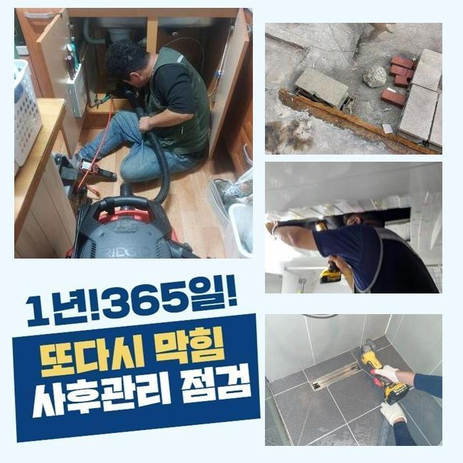
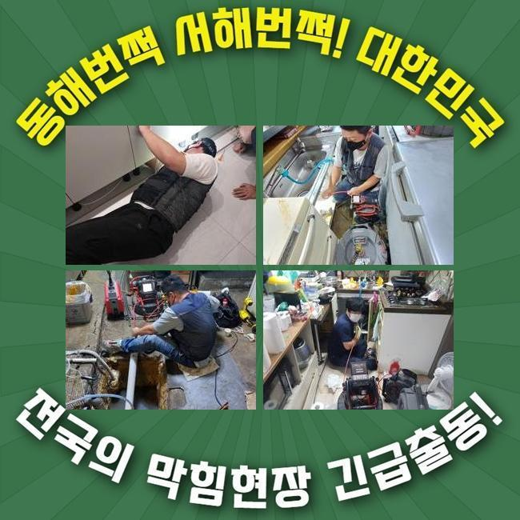
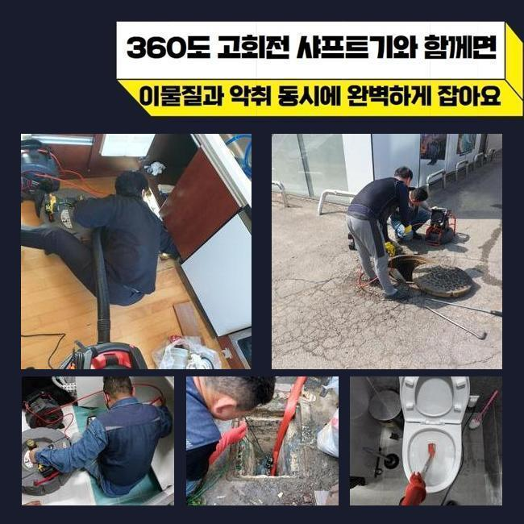
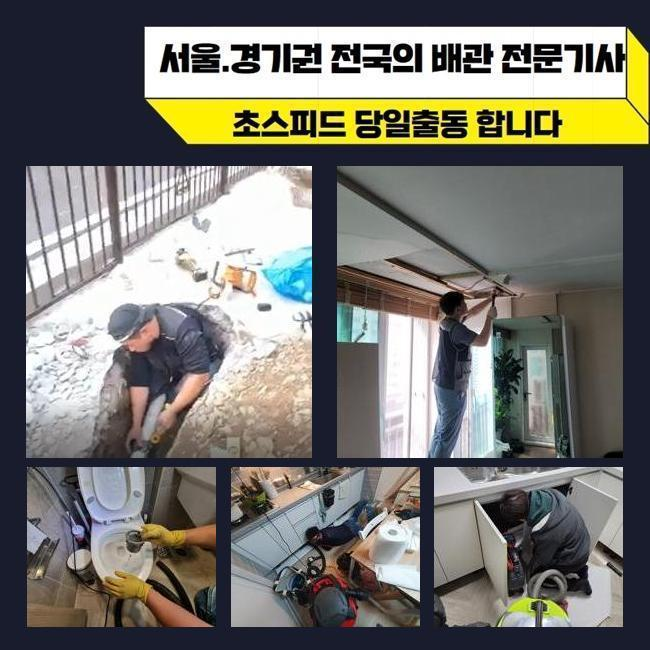
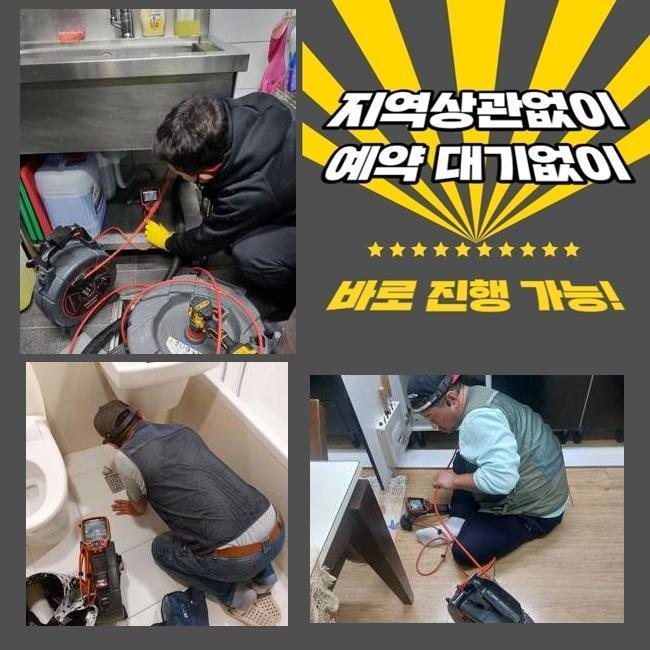
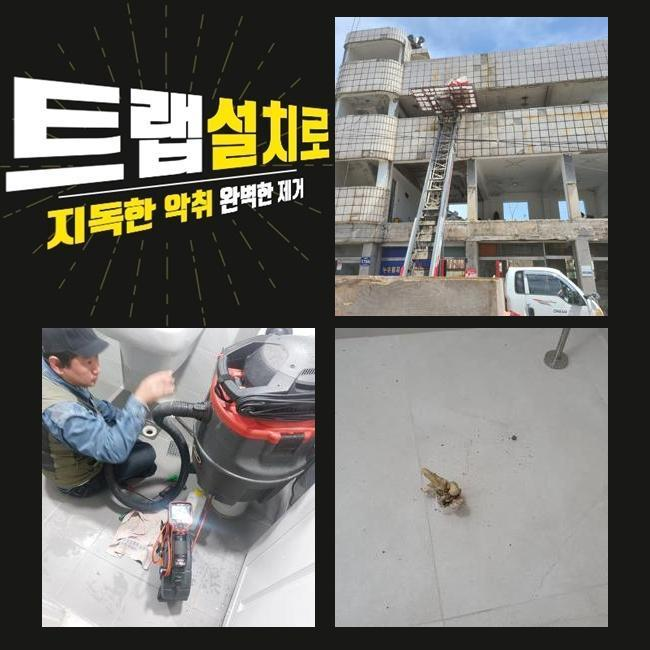
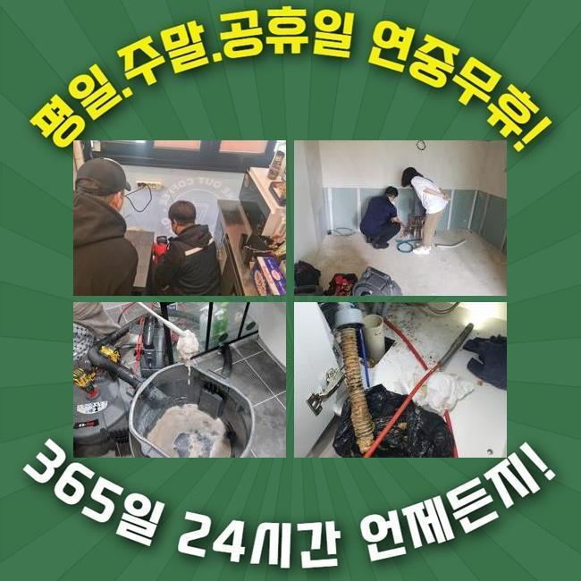

🏠 일산 마두동싱크대역류 사리현동 고압세척비용 배관설비공사
용인 싱크대막힘 전문 시공 후기

📋 작업 개요
- 위치: 용인
- 서비스 유형: 싱크대막힘, 하수구막힘, 배관막힘, 누수수리, 역류해결, 배관청소, 고압세척, 설비공사, 배관보수, 악취차단
- 작업 일시: 2024. 12. 6. 11:59
- 업체명: 하수구수사대 (010-5615-2118)
🔍 문제 상황
일산 마두동싱크대역류 사리현동 고압세척비용 배관설비공사
주방이나 화장실에서 적절하게 배수기능이 작동하지 않는다면 갑갑하고 저절로 없어지지 않는 문제이므로 전문가를 알아보게 됩니다
이번 글에서는 그것에 관계된 파이프 차단 사태를 설명해드리겠습니다
우리팀이 출장간 손님의 거주지는 이틀 전에 배수관계에 문제가 생겨서 시설물 이용에 트러블을 만들고 있었답니다
배수관이 정체를 이룬다면 하수가 제대로 빠져버리지 못해서 악취가 발생할 가능성이 높고 골치아픈 사태를 유발하기도 해요
그렇기에 빠른 처리가 요망되며 고통을 겪고 있으신 분들은 제때에 전문적인 수리를 받아보실것을 권장해드려요
이 부분을 해결하려 선제적으로 파악할 것은 배수와 관계된 시설물이죠
배수관 이용에 적합하지 않은 습관등을 가졌다면 하수관의 메커니즘이 똑바로 안돌아가기도 해요
그렇기에 정기적인 세척과 진단으로 사전에 대비하는 것이 좋습니다
시공할땐 배관카메라를 써서 심각한 막힘이 상존하는 지점을 꼼꼼히 점검하고 세정작업을 이행하죠
시공히 똑바로 진행되려면 확실한 조사가 요망되서죠
이물들이 있던 지점에선 화학제품을 넣어 스무스하게 처치될수 있게 유연하게 세척을 실시하였습니다
시공을 해나가면서 이물들은 빠졌지만 완벽한 청소까진 예측보다 긴 시공시간이 소모됐어요
기름슬러지와 석회물질 등을 소쇄하려 분쇄기계를 쓰기로 결단했습니다

🔎 원인 분석
💡 전문가 진단: 정밀 진단 장비를 사용하여 슬러지의 고착 여부를 판명하고 타격/세척 작업을 실시했습니다.
기기 앞부분에 결속된 단단한 노커로 노폐물을 타격하여 세척해나갈수 있어요
오염물질이 벽부위에 상당량 존재하여 분쇄장비를 사용하여 초반시공을 조율했고 이때 석회물질들과 슬러지를 제거하기로 했죠
이것을 그대로 내버려둔다면 심대한 트러블이 나타날수 있어 발빠른 대처가 요망된다고 말해드렸어요
해당되는 청소업무 간에는 부가적인 문제가 없게끔 집중해야 됩니다
파이프에 타격이 가해지면 그부분으로 하수가 집약될수 있고 갈라져버리기도 하죠
그렇기 때문에 해당하는 장비들을 쓸때는 꼭 충분한 경험이 동반되어야 해요
또 그런 상황엔 조속히 의뢰해서 찌꺼기들이 쌓이지 않게끔 만드는게 핵심이겠죠
물샘 여부를 조사하려면 배수 속도를 살펴보고 내시경기기를 통해서 파이프 안쪽부분을 살펴야 해요
만일 그때 균열이 발견되었다면 보수공사 등 빠른 수리를 이행해야 됩니다
저희팀은 이러한 일에 대응해서 전반적인 수리도구들을 항시적으로 챙기고 출동하고 있어요
관로에서 생기는 잔해들의 모습들을 진단하게 되면 관련없는 노폐물이 보일때가 많은데요
다수가 사용하는 장소라면 더 곤란한 형국으로 발전할수 있어요
그러한 사태가 벌어지면 파이프에 자극이 들어가 누수까지 표출될수 있으므로 정밀한 조사가 불가결합니다
내시경기기로 문제가 생긴 위치를 검사하는 프로세스가 배각된다면 근본적 요인을 발견하지 못할수도 많은데요

🔧 작업 과정
내시경기기로 배수관 안을 조사하면서 여러 이물질과 끈끈해진 석회물질로 배수길이 막혀버렸다는 사실을 알수 있었죠
방치해버리면 오염물질이 위로 솟구칠수 있으므로 재빠른 대응이 요청되었어요
관안은 많이 오염된 상태였고 음식물 다양한 이물들과 기름때가 쌓여 있었어요
이것으로 인하여 물이 적합하게 흘러가지 못해 고장이 심화된거죠
그러하기에 분쇄공정과 세척작업이 필수였습니다
누적된 찌꺼기들을 파악하고자 내시경cctv를 이용했고 상황에 맞는 처치를 행하였죠
관로 정체를 해결하려는 계획 하에 작업을 수행했어요
그러한 과정 속에서 하수관 길을 충분히 확보할수 있는 상황이었어요
또 세척 업무간 발생하는 노폐물이 관로로 빠져들어 누수증상을 촉발할수 있기 때문에 미리 상황에 대비하는게 좋아요
그걸 방지하려면 수리할때 하수관을 똑바로 막아 오염물질이 들어가지 않도록 조심해야 한답니다
그러한 대처방안을 통해서 순탄하게 관로 활용을 할수가 있습니다
관로의 파손을 생각해 조심스러운 분쇄과정을 해나가며 내시경설비를 사용해서 노폐물이 있는 자리를 발견했어요
배관 밑부분엔 경화가 된 석회물질이 있었으며 그냥 놔두면 통수문제와 함께 악취까지 발발할거란 사실을 예상할수 있었어요
우리들은 깔끔하게 이물들을 걷어내고 관로를 세척하여 수도가 제대로 작동되게 하였어요
이런 체계적인 과정을 통해서 배수시스템의 기능을 보존하려는 행동이 이어져야 할것입니다
전체적인 시공을 통해서 배수문제를 처리했고 사후 출몰가능한 고장도 예방할수 있는 상황이었어요
의뢰인께서는 본질을 알아내고 결론을 얻어가는 과정들이 상당히 중요하단 걸 깨달았다고 하십니다
효율적으로 세척을 하기위해서는 샤프트기기를 활용실행해야 하죠
해당되는 기계가 예비되지 않으면 찌꺼기를 온전히 소멸시키기 어려우며 몇달 가지않아 재차 차단될수있기 때문이랍니다
석션기기도 필수적 기능을 맡고 있단걸 알립니다
배관 고장은 일단 발생하면 자체적으로 사라지기 힘들어요
그러므로 주기적인 세척과정을 통해서 고장을 방지하고 발발한 문제들은 속히 대응하여 해결이행해야 됩니다


✅ 작업 완료
그렇게 한다면 관계된 장애와 연관된 불이익을 최소화할 수 많아요
배관쓰레기 정리를 꼼꼼히 해나가고 위생적인 환경을 유지하시면 편안한 일상생활을 만끽하실수 있죠
우리팀은 고객님의 입장에 따라서 예약을 진행한뒤 방문드리고 있는데요
관로가 왜 막혔는지 가리지않고 알맞은 공구와 기술력으로 일한다는 걸 알려드립니다
갑작스레 하수구에 막힘이 생겨났다면 아무때라도 의뢰 부탁드립니다
정확하게 고장을 처치하겠습니다




⚠️ 베란다 누수 및 방수 관리 방법
- ✅ 비가 많이 올 때 창틀 주변이나 아래층 천장에 얼룩이 생기는지 정기적으로 확인해 보세요.
- ✅ 우수관 주변 실리콘 마감이 들뜨거나 깨진 틈새가 있는지 손상 여부를 수시로 체크하세요.
- ✅ 베란다 바닥 타일의 줄눈(메지)이 소실되면 그 틈으로 물이 침투하여 누수가 유발됩니다.
- ✅ 누수 의심 증상 발견 시 방치하면 아래층 손실이 커지므로 즉시 전문가의 진단을 받으십시오.
💡 핵심 정리
- 확실한 장비 작업(내시경 점검 및 샤프트 스케일링)으로 원인을 뿌리 뽑습니다.
- 작업 후 1년 이내에 동일한 부위 재발 시 100% 무상 A/S 서비스를 보장합니다.
- 서울 · 경기 · 인천 전 지역에 24시간 언제든 긴급 출동할 수 있도록 항시 대기 중입니다.
❓ 자주 묻는 질문 (FAQ)
🚨 용인 싱크대막힘 문제로 고민이신가요?
정확한 원인 진단과 확실한 시공으로 재발 없는 해결을 약속드립니다.
24시간 긴급 출동 | 서울 · 경기 · 인천 전지역 | 1년 내 재발 시 무상 A/S